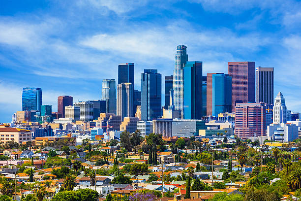

About Los Angeles
Los Angeles, the entertainment capital of the world, is known for its iconic Hollywood sign, sprawling metropolis, and beautiful beaches. From the studios of Hollywood to the boardwalks of Venice Beach, Los Angeles offers endless opportunities for exploration and adventure.


Top Attractions
- Hollywood Walk of Fame
- Universal Studios Hollywood
- The Getty Center
- Griffith Park and Griffith Observatory
Facts
- City Population: 3,790,742
- Incorporated: 1850
- Region: Southern California
- Classification: Urban
- Average Income: $62,142 (State Average: $80,000)
Los Angeles City Information
Los Angeles is the second-most populous city in the United States and is known worldwide as the center of the film and television industry. Hollywood, a neighborhood in Los Angeles, is home to many famous studios and the iconic Hollywood sign.
Did You Know? The "Hollywood" sign originally read "Hollywoodland" when it was erected in 1923.